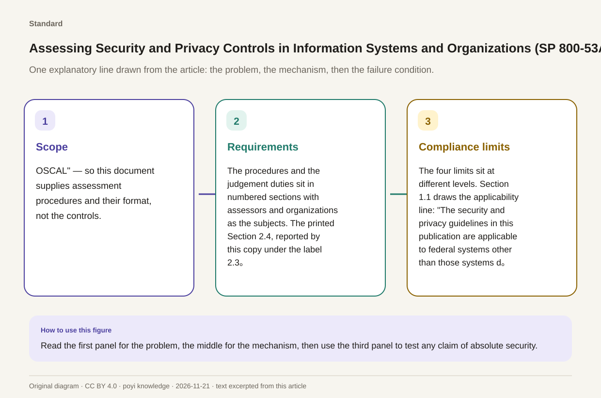
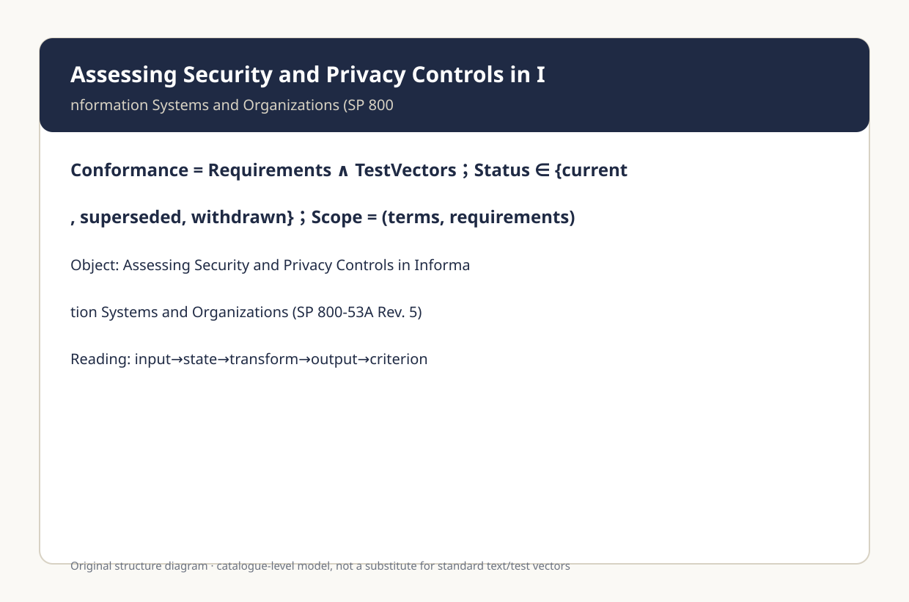

Principles
Standard: Assessing Security and Privacy Controls in Information Systems and Organizations (SP 800-53A Rev. 5) (评估信息与系统中的安全与隐私控制（SP 800-53A Rev.5）). The first abstract sentence gives the two outputs and their frame: "This publication provides a methodology and set of procedures for conducting assessments of security and privacy controls employed within systems and organizations within an effective risk management framework." The next fixes what they align to: "The assessment procedures, executed at various phases of the system development life cycle, are consistent with the security and privacy controls in NIST Special Publication 800-53, Revision 5." The third characterises the procedures as a tailorable starting point: "The procedures are customizable and can be easily tailored to provide organizations with the needed flexibility to conduct security and privacy control assessments that support organizational risk management processes and are aligned with the stated risk tolerance of the organization." Section 1.1 compresses the action again: "The purpose of this publication is to provide guidelines for building effective security and privacy assessment plans, as well as a comprehensive set of procedures for assessing the effectiveness of security and privacy controls employed in systems and organizations." and names the catalogue they hang on: "The guidelines apply to the security and privacy controls defined in [SP 800-53] (as amended), Security and Privacy Controls for Information Systems and Organizations." The keyword line lists the outputs, including "Open Security Controls Assessment Language; OSCAL" — so this document supplies assessment procedures and their format, not the controls.

Why it matters
The opening of Chapter One places the cause and effect: "Once employed within a system, security and privacy controls are assessed to determine their overall effectiveness (i.e., the extent to which the controls are implemented correctly, operating as intended, and producing the desired outcome with respect to meeting the security and privacy requirements for the system and the organization)." The Executive Summary first rules a misuse out: "Security and privacy control assessments are not about checklists, simple pass/fail results, or generating paperwork to pass inspections or audits." and states the real function: "Rather, control assessments are the principal vehicle used to verify that selected security and privacy controls are implemented and meeting stated goals and objectives." The same section names the design tension: "A major design objective for SP 800-53A is to provide an assessment framework and initial starting point for assessment procedures that are flexible enough to meet the needs of different organizations while providing consistency in conducting control assessments." and the position in the framework: "SP 800-53A addresses the Assess and Monitor steps of the RMF and provides guidance on the security and privacy control assessment processes." Section 2.3 supplies the unit of proof: "An assurance case is a body of evidence organized into an argument demonstrating that some claim about a system holds (i.e., is assured)." The gap being closed is therefore proof after selection: chosen controls are not thereby shown to be correctly implemented and working.
Applications
The procedures and the judgement duties sit in numbered sections with assessors and organizations as the subjects. The printed Section 2.4, reported by this copy under the label 2.3, bounds methods and objects: "Assessment methods define the nature of the assessor actions and include examine, interview, and test." and "Assessment objects identify the specific items being assessed as part of a given control and include specifications, mechanisms, activities, and individuals." The level of effort is the organisation's call, and that sentence is printed in 2.4 as well: "The organization determines the assessment methods needed to provide the level of assurance required by the organization." Section 1.1 characterises the catalogue as a starting point, "The guidance in this publication has been developed with the intention of enabling organizations to tailor the basic assessment procedures provided." followed by "The assessment procedures are used as a starting point for and as input to the assessment plan." Section 3.2.2 puts selection on the assessor: "For each control in the security plan and privacy plan to be included in the assessment, assessors select the corresponding assessment procedure from Chapter 4." and states coverage: "SP 800-53A provides assessment procedures for each security and privacy control and control enhancement in [SP 800-53]." Section 3.2.3 gives the tailoring levels: "Organizations have the flexibility to perform the tailoring process at the organization level for all systems or common controls, at the individual system level, or using a combination of organization-level and system-specific approaches." No shall appears in the sections quoted here, whose wording is present tense or may; the copy carries exactly one shall, the conditional sentence in the Authority block quoted under the limits claim, so the absence cannot be stated for the document as a whole. Within the quoted range the obligation is allocation: assessors select procedures and organizations set rigour and frequency.

Limits & attacks
The four limits sit at different levels. Section 1.1 draws the applicability line: "The security and privacy guidelines in this publication are applicable to federal systems other than those systems designated as national security systems, as defined in 44 U.S.C., Section 3542." The Authority block states the same bound conditionally: "Such information security standards and guidelines shall not apply to national security systems without the express approval of the appropriate federal officials exercising policy authority over such systems." A footnote in §1.1 hands the lower layer over: "Such test scripts are at a lower level of detail than provided by the assessment procedures contained in this guidance and are, therefore, beyond the scope of this publication." The cautionary note before the Chapter Four catalogue rules out a checklist reading: "the potential assessment methods are not intended to be mandatory or exclusive." and does the same for the objects: "In addition, the set of potential assessment objects listed in the catalog are not intended to be mandatory but rather a set from which the necessary and sufficient set of objects for a given assessment can be selected to make the appropriate determinations." A further limit belongs to this extraction rather than the document: from the Chapter Four catalogue onward its procedure tables and page footers replace ligatures with private-use codepoints, ti as U+E000 and tt as U+E003, so the words print as Organiza plus U+E000 plus onal and informa plus U+E000 plus on (1215 and 2843 occurrences in that shape), while the download line in the footer reads h plus U+E003 plus ps. The literal strings Organizaonal, informaon and hps occur nowhere in the copy, and an intact https occurs 137 times. Those invisible codepoints make the damaged words unusable as quotations, so no procedure text from those blocks is quoted.
History
The title block prints its three lines as one run, "NIST Special Publication 800-53A Revision 5 Assessing Security and Privacy Controls in Information Systems and Organizations JOINT TASK FORCE", the signature being an interagency body rather than named individuals; the date comes from the citation line, "Natl. Inst. Stand. Technol. Spec. Publ. 800-53A, Rev. 5, 733 pages (January 2022) CODEN: NSPUE2", and the free-access line reads "This publication is available free of charge from:" followed by the DOI 10.6028/NIST.SP.800-53Ar5. The working group is named by the first acknowledgements sentence, "This publication was developed by the Joint Task Force Interagency Working Group." which page also lists predecessors and dates the series: "The authors wanted to acknowledge the many individuals who contributed to previous versions of Special Publication 800-53A since its inception in 2005." among named officials such as the defense entry "HON. John Sherman Chief Information Officer". The edition fact comes from the front-matter formatting block: "The new format for assessment procedures introduced in Special Publication (SP) 800-53A Revision 4, is further improved in this revision (SP 800-53A Revision 5)." This copy contains no publication history block, no supersession line and no withdrawal banner; consistency of the SP 800-53 numbering is handled in a note in the same block.
Worked example & verification
Formal model and reproduction steps
[S=\min_i S_i,\quad S_i\in{\text{密钥强度},\text{分组安全},\text{实现安全}}]
Assessing Security and Privacy Controls in Information Systems and Organizations (SP 800-53A Rev. 5): the registered public parameters, key material or randomness, and message are mapped through the stated transformation to an output checked against the registered criterion. The worked example is a structural reproduction, not a new test vector; parameter ranges, standard versions and implementation details remain source-bound.
References
- Wikipedia search entry for 评估信息与系统中的安全与隐私控制（SP 800-53A Rev.5）. https://zh.wikipedia.org/w/index.php?search=%E8%AF%84%E4%BC%B0%E4%BF%A1%E6%81%AF%E4%B8%8E%E7%B3%BB%E7%BB%9F%E4%B8%AD%E7%9A%84%E5%AE%89%E5%85%A8%E4%B8%8E%E9%9A%90%E7%A7%81%E6%8E%A7%E5%88%B6%EF%BC%88SP%20800-53A%20Rev.5%EF%BC%89
- Handbook of Applied Cryptography (Menezes, van Oorschot, Vanstone). https://www.cacr.math.uwaterloo.ca/hac/